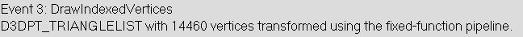
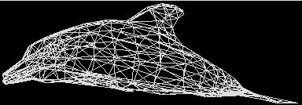
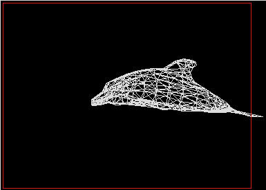

The PIX Mesh Debugger shows the rendered mesh used when making calls to: DrawVertices, DrawVerticesUP, DrawIndexedVertices, DrawIndexedVerticesUP, Begin/End, BeginPush/EndPush, or RunPushBuffer.
The top of the debugger lists the name of the event, the type of rendered primitive, the number of vertices, and whether it uses a vertex shader or the fixed-function pipeline.

The debugger shows a wireframe of both the transformed mesh and the mesh relative to the actual viewport. While showing the mesh relative to the viewport, the rendered viewport is shown as a red outlined box.

Illustration Transformed mesh.

Illustration Mesh relative to the viewport.
Below the rendered wireframes, the debugger lists all of the vertex data used to render the mesh. If a vertex shader was used, clicking on the index of a vertex will launch the PIX Vertex Shader Debugger for that vertex.